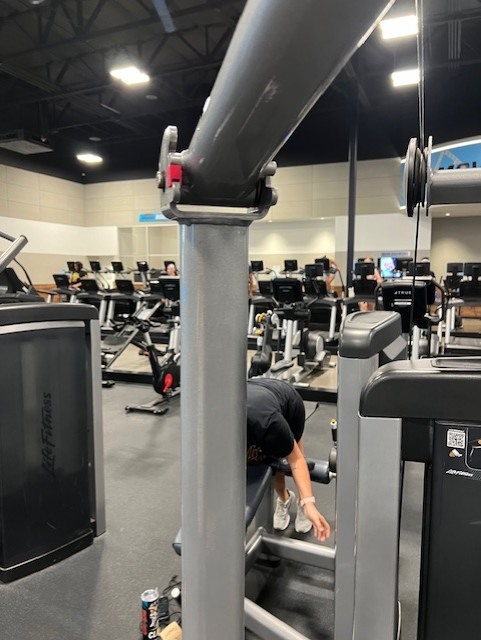
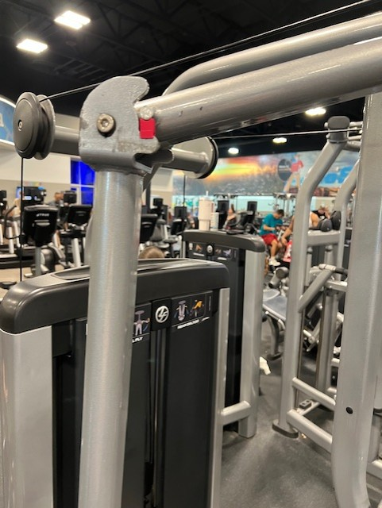

Welcome to the PraterLabs Webpage
Parts for the Hammer Strength Select Pectoral Fly/Rear Deltoid
to help with Stroke rehabilitation
Navigation
Home
Fly Machine Aids for Stroke Rehab
Triceps Extension Aids for Stroke Rehab
Due to low tone or the triceps brachii muscle, the arm tend to bend, limiting exercise effectiveness

